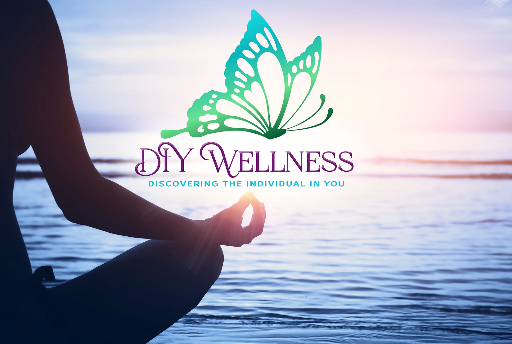

Lisa Wainwright
DIY Wellness is owned and operated by Lisa Wainwright who has over 17-years of experience dedicated to helping individuals from a variety of diverse populations CHANGE and TRANSFORM their lives to achieve an optimum state of wellness. Lisa holds a Master’s Degree in Social Work and Business Management with a Concentration in Organizational Management, along with a Bachelor’s and Associate’s Degree in Psychology. In addition to being a Holistic Mental Wellness Coach, Lisa is also a LMSW license therapist.
I am excited to meet you and introduce to you to a different way of taking control of your life and finally achieving the relief and balance that your heart desires! I too was a fellow seeker searching for peace, balance, and security amidst this turbulent and ever-changing world that we live in. Troubled by inner worry, past trauma, external pressures, and surmounting anxieties of personal ambition; like you, I too found myself in a dark place once upon a time in my life. Like many others, I sought help from professionals within the traditional talk therapy setting. And like many others, I left feeling unhealed, incomplete, and fragmented with no other means calming my inner turmoil. While that setting certainly works for many others, for me, and others like me, more is needed. That is what lead me to seek and discover a new approach to mental wellness, to treating the individual, and to truly helping individuals discover themselves, their strengths, and their abilities in a way that makes YOU your own healer. No more relying on others to make you feel better, to support you, and to change your life. With this approach, YOU learn to become your own healer. As you dive deep into the complexities of what brings you into services, you will begin to discover what truly makes you unique, special, and so very capable of overcoming all obstacles set before you! My background in mental health and mental wellness is complimented by a catalog of alternative healing approaches, holistic wellness approaches, eastern medicine philosophies & spiritual practice, as well as metaphysical teachings to create a unique and authentic Holistic approach to treating the "Whole-Self". Through a combination of traditional talk therapy theories and alternative healing practices such as mindfulness, meditation, sound therapy, yoga, energy balancing, crystal therapy, essential oils, natural herbal healing, and more; I will help you explore and journey into the depths of what challenges you to discover the underlying spring of Resiliency, Reliability, Confidence, and Capability that lies within!
Laura Julliard
Laure Julliard is a self-taught photographer born in Switzerland of an American mother and Swiss father. She recently moved back after living in Switzerland, Brazil and the US. She is a grandmother and have worked with hundreds of children in two international nonprofits. Laure's philosophy is that Photography is a great way to meet new people and help those struggling with finding themselves. She cannot wait to meet you and bring out the best version of YOU!
Are you going through a transformation? Are you at a crossroad? A transformation coach walks with you while you walk out of your old life into your new one, one goal at a time with wellness. Peace and Love. My name is Laure. I am a Transformation Vision Coach. I use talking in person or through telehealth as well as nature walks, photography, and art to coach you. Let’s combine our creative energy to help you bring out your best you for this next season! Today, I am a certified coach, here for you; reconnecting with your inner child and your creativity as you become a beautiful transformed being through your own spiritual growth. If you want to work towards being more present, or on a goal, lets walk a bit of your journey together. I work with ancestral teachings, healing art, photography and various other skills. I will share with you, what I’ve been taught by many extraordinary people who have touched my heart and given me tools to reach inner peace in an ever-changing world.
I specialize in transitions:
If you are in the process of separation…
If you just became a mother…
If your children just left the nest…
If you are in the process of professional changes…
Then you can feel the butterfly in you trying to come out of the cocoon! Call me, we will envision it together! Reach your goal. The time is now. The sun just came up in your life to shine on your beauty, strength and gentleness!! A new day is here, and possibilities are bountiful. As we celebrate the end of this season remember that each end is a beginning. And, I know, if you are reading this, you are in the right place!!!
Continue...